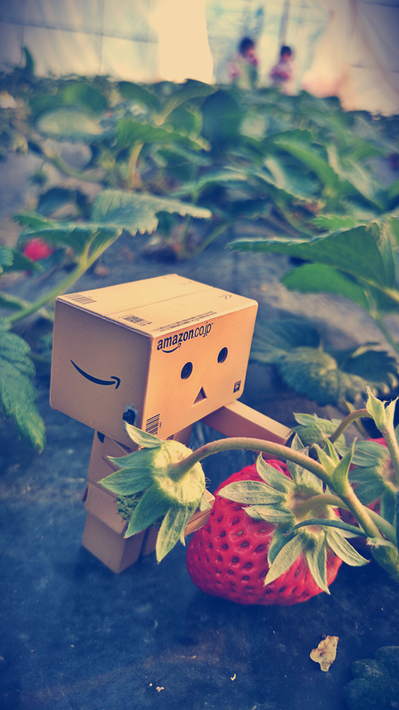
最开始总要回忆回忆下美好的时光
上滑开启一周年回忆
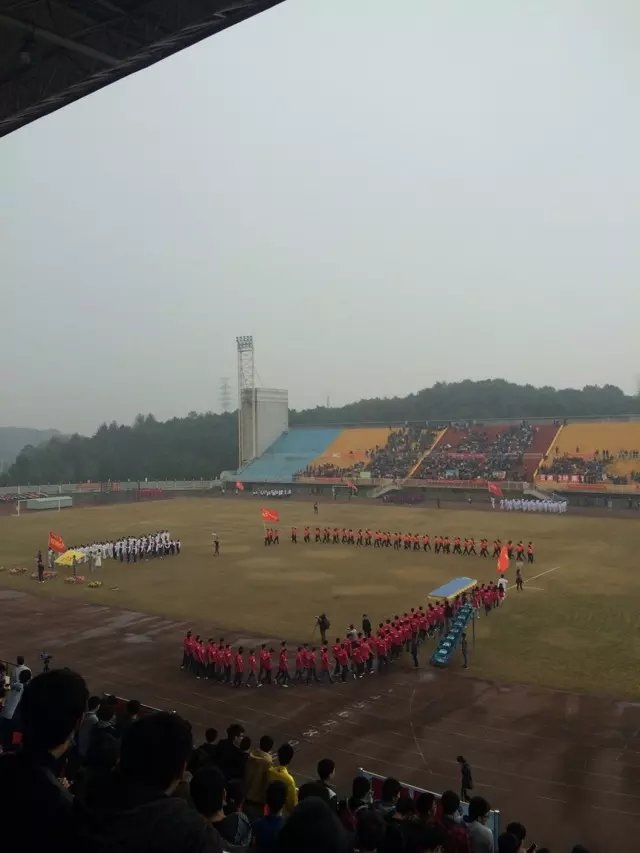
我们真正相识于2016年10月22日的晚上,聊的很愉快,似乎很早就认识了一样。并且证实了你不吃带叶子的菜。哈哈😄

之后的某一天,你要换头像,要我帮你找,最后我找到了一套头像,于是我们换上了同一套头像,之后我再也没有主动换过头像。很开心！
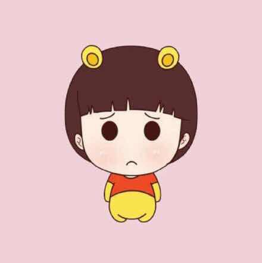
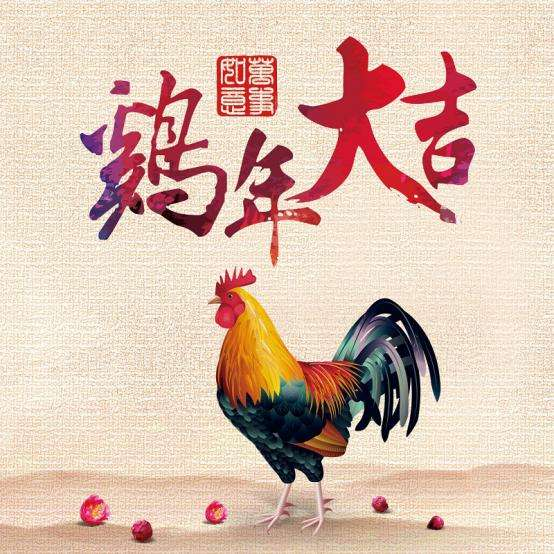
经过了种种考验,我们于2017年大年初三的凌晨在一起❤️啦. 第一次真真正正的有恋爱的感觉。哈哈
自那以后,月湖公园就是我们常常去的地方,在那里散步,累了就在旁边的亭子歇息。
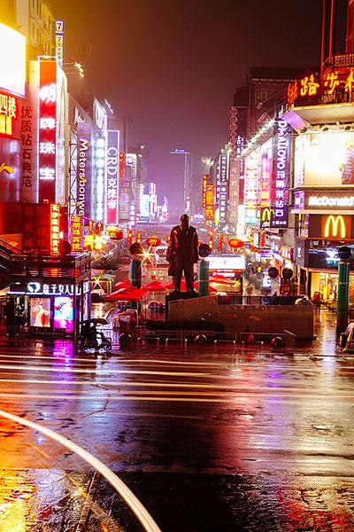
第一次真正约会,我们看了第一场电影《生活危机:终章》。不过,你应该没有看明白电影讲的什么,因为一有打斗的场景你都会把头藏在我脖子上,完后还会问我发生了什么,哈哈️
当然也吃了第一顿饭,叫啥烤鱼来着。哈哈。记不清了。
从那以后,我们出去的次数越来越多,相处的时间一长,感情也越来越深。当然我们也避免不了争吵,但最后我们都雨过天晴,不提也罢。
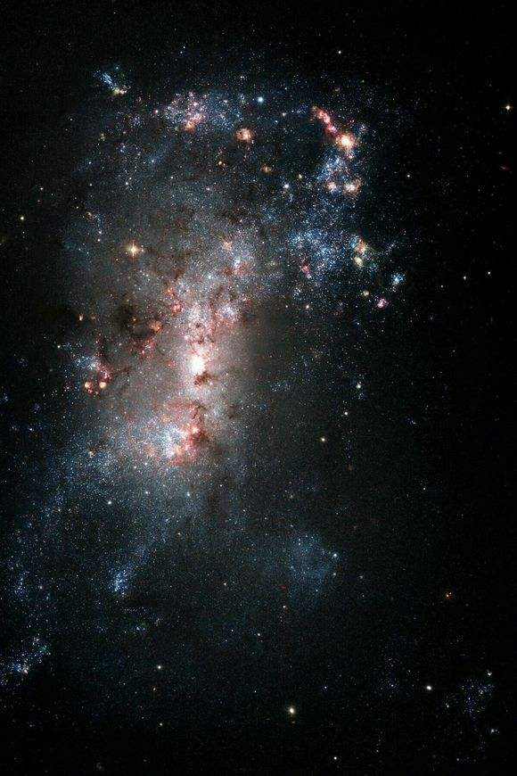
当然,转眼间我们就大四了,你要准备中石化的考试,我也要准备找工作啦。
虽然各自有各自的事情要做,但我们依然互相陪伴,一起复习一起吃饭。
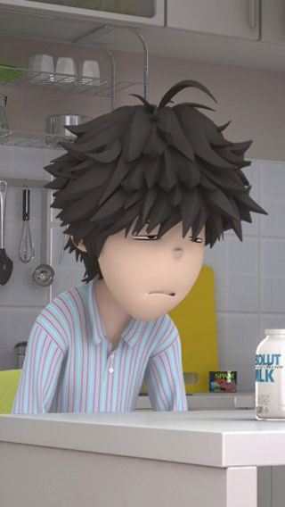
一起复习不久,我也要上班啦,但我们还是以另一种方式陪伴着,你等我下班吃饭,我陪你去图书馆自习。
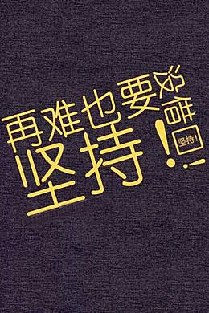
最后,你笔试面试,发挥都不错,并顺利的被录取啦。真为你感到开心,为此当天吃了碗螺蛳粉表示祝贺呢。
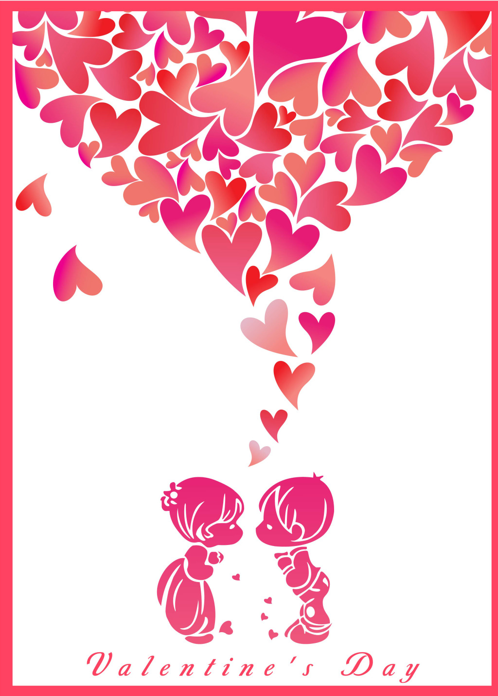
好了好了,说了这么多,让我们回到正题。
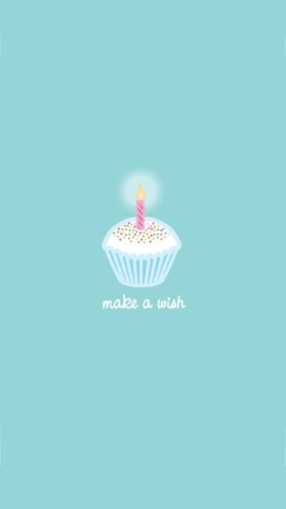
去年的今天到现在,我们已经在一起一年了。开不开心,啦啦啦
上滑有惊喜哦
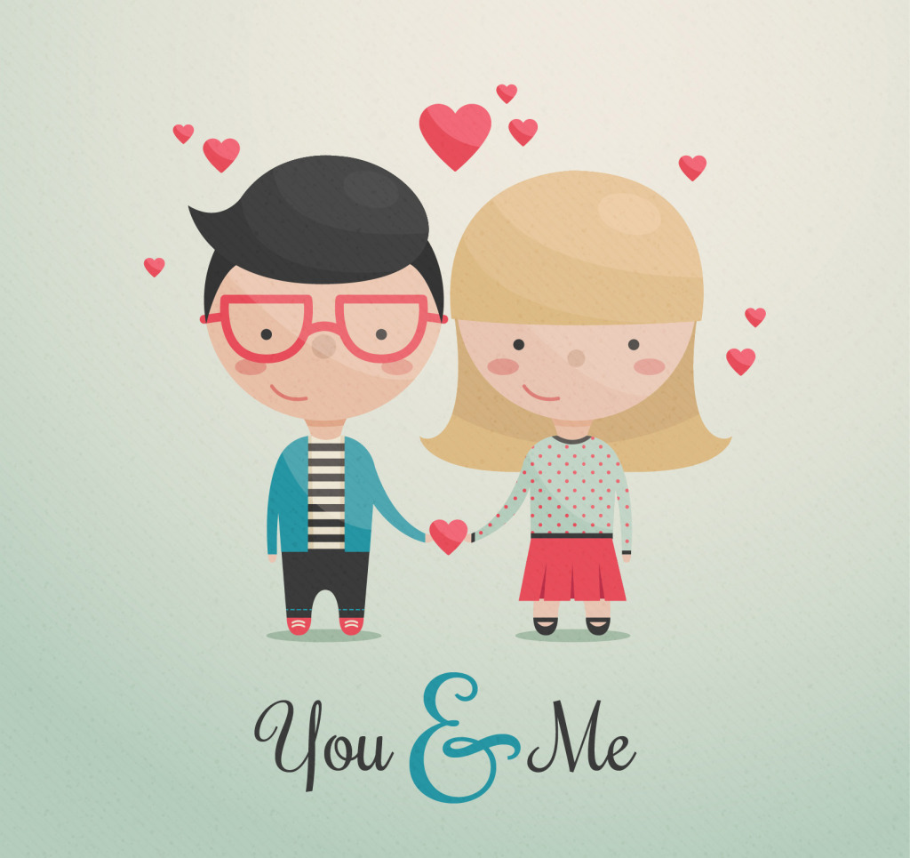
第一波惊喜